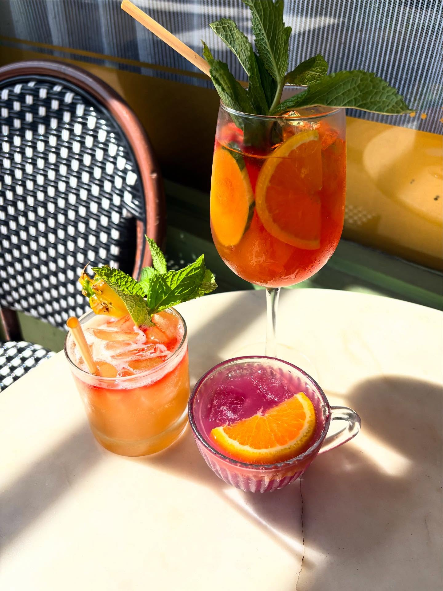

#1

Hillside Farmacy
Half-Price Oysters & Wine, Wed-Fri
1209 E 11th St · East Austin
Half-price oysters, half-price draft beer, and half-price wine bottles three days a week. Then Wednesday night turns into a $20 Wagyu burger that comes with a free Old Fashioned, and the deal-per-square-inch math gets ridiculous.
Wed-Fri, 3-5pm
- Half-price oysters
- Half-price draft beer
- Half-price wine bottles
- Half-price sharing menu
+ 3 more deals
Thu, 3-10pm
- Half-price specials extended late on Thursday
Wed, 5-10pm
- $20 Wagyu (or veggie) burger + fries with a free Old Fashioned
Sun, 5-10pm
- $25 steak special